Next: Low-beta equilibrium vs. high-beta Up: Special treatment at coordinate Previous: Fixed boundary equilibrium numerical
To benchmark the numerical code, I set the profile of and  according to
Eqs. (69) and (70) with the parameters 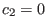,
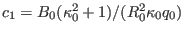,
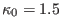, and 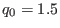. The comparison of the analytic and numerical results are shown in Fig.
31.
according to
Eqs. (69) and (70) with the parameters 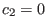,
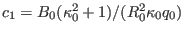,
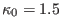, and 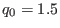. The comparison of the analytic and numerical results are shown in Fig.
31.
| 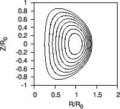 |
Note that the parameter 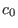 in the Solovev equilibrium seems to be not needed in the numerical calculation. In fact this impression is wrong: the parameter is actually needed in determining the boundary magnetic surface of the numerical equilibrium (in the case considered here is chosen as 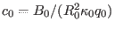).